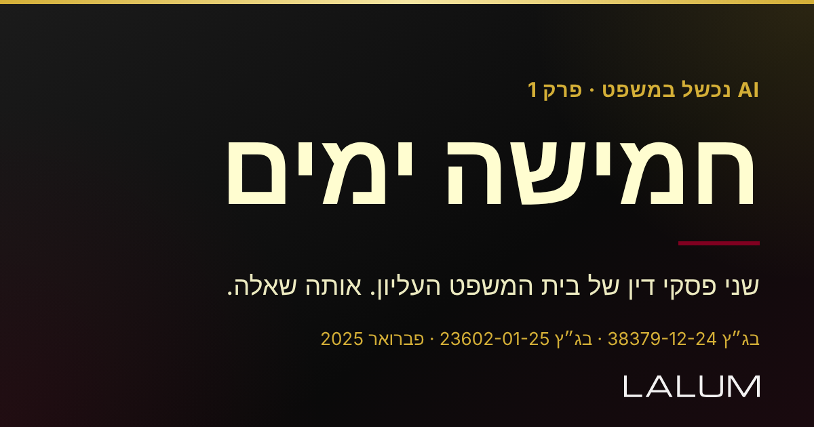
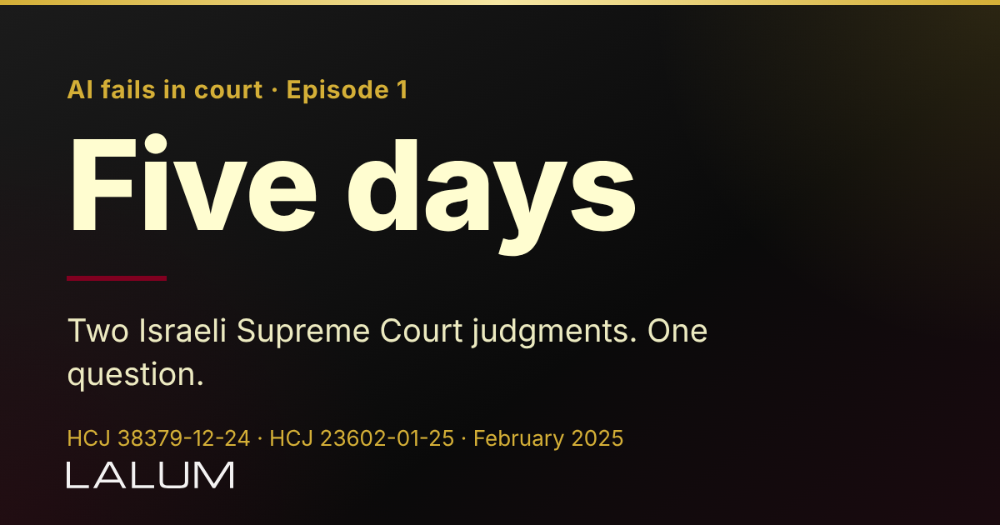
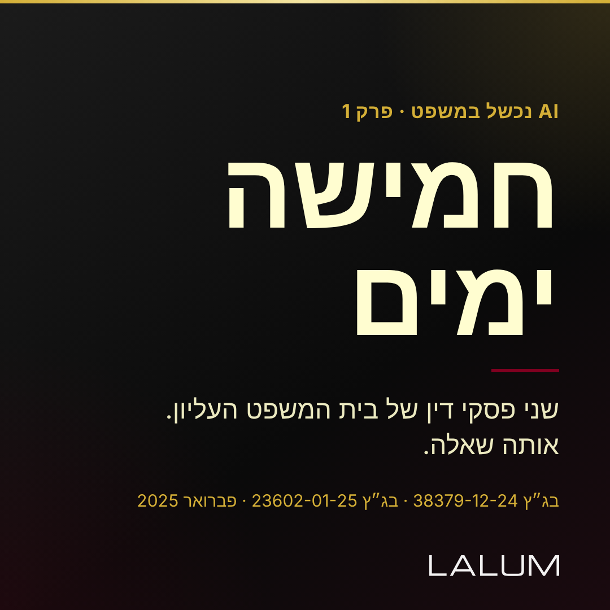

| פלטפורמות | FacebookTelegramInstagram (עברית) LinkedIn (אנגלית) |
| מועד מתוזמן | הצעה: 20.10.2026 בשעה 09:00 (שעון ישראל). לקביעה בעת האישור. |
| מקור הטענות | הנוסח הרשמי של בג"ץ 38379-12-24 (23.2.2025) ובג"ץ 23602-01-25 (28.2.2025), כפי שמתועד ב-docs/ai-failures/verified-cases.md. אין שמות עורכי דין. |
| קישור | lalumapp.com/ai-legal-advisory/human-oversight (בגוף הפוסט) |
| סרטון | 60 שניות, אנכי, ללא קול, טקסט בעברית. העלאה ידנית: האוטומציה הקיימת שולחת טקסט וכרטיס תמונה בלבד. |
| תמונות | 1200x630 (עברית ואנגלית) ו-1080x1080 (אינסטגרם), צבעי Prestige Executive, לוגו LALUM רשמי |
עברית, פייסבוק וטלגרם (1200x630)

אנגלית, לינקדאין (1200x630)

עברית, אינסטגרם (1080x1080)

חמישה ימים הפרידו בין שני פסקי דין של בית המשפט העליון על אותה שאלה. ב-23 בפברואר 2025 נדחתה עתירה שנסמכה על 36 פסקי דין. בין ההפניות, חמש היו לפסקי דין שכלל אינם קיימים במאגרים. באת כוח העותרת הסבירה שהסתמכה על "אתר שהומלץ לה ע״י קולגות". בית המשפט העריך ש"בסבירות גבוהה" מדובר באתר מבוסס בינה מלאכותית, ולא נקט נגדה סנקציה, כי זה "מקרה ראשון מסוגו". אבל הוסיף: "אין זו זכות אלא חובה". ב-28 בפברואר, עתירה אחרת. "טרם יבשה הדיו", כתב השופט סולברג. העתירה נדחתה על הסף, מחוסר ניקיון כפיים, והעותרת חויבה ב-7,000 ש״ח. ובסוף הפסק: "מעתה ואילך, יוחזקו העוסקים במלאכה כ׳מותרים ועומדים׳; התגובה השיפוטית […] תשתנה בהתאם." שימו לב למה שלא נאמר. לא נאמר שאסור להשתמש ב-AI. נאמר: "אל לנו לשפוך את התינוק עם המים", ושאין להסתמך על הכלי "הסתמכות עיוורת". הפער הוא לא הטכנולוגיה. הוא השלב שבו מישהו בודק. שלוש בדיקות לפני הגשה (ההצעה שלנו, לא של בית המשפט): ✓ האם הפסק קיים במאגר? ✓ האם הציטוט מופיע בו? ✓ האם הוא באמת תומך בטענה? הסרטון (60 שניות) מצורף. הפסקים המלאים באתר פסקי הדין של בית המשפט העליון: בג״ץ 38379-12-24 ובג״ץ 23602-01-25. *הפוסט מתאר שני פסקי דין ואינו ייעוץ משפטי.* ▸ איפה בדיוק נכנס האדם: lalumapp.com/ai-legal-advisory/human-oversight ↳ **LALUM | ייעוץ Tech-Legal, ממשל AI ונדל״ן** #LegalAI #ממשלAI #AIGovernance #LALUM
Five days separated two Israeli Supreme Court judgments on the same question. On 23 February 2025 the Court dismissed a petition built on 36 cited rulings. Among the references, five were to rulings that do not exist in the legal databases. Counsel explained she had relied on "a site recommended to her by colleagues". The Court assessed it was "highly likely" an AI based site, and took no action against her because this was "a first of its kind". It added: "this is not a right but a duty". On 28 February, a different petition. "The ink had not yet dried," Justice Solberg wrote. It was dismissed on the threshold for lack of clean hands, with costs of NIS 7,000. And the judgment ends with a message to the profession: "From now on [...] the judicial response [...] will change accordingly." Note what was not said. The Court did not say AI must not be used. It said: "we must not throw the baby out with the bathwater", and that lawyers may not rely on these tools "blindly". The gap is not the technology. It is the step where someone checks. Three checks before filing (our suggestion, not the Court's): ✓ Does the ruling exist in the database? ✓ Does the quotation appear in it? ✓ Does it actually support the argument? The 60 second video is attached (Hebrew on-screen text). The full judgments are on the Supreme Court's decisions site: HCJ 38379-12-24 and HCJ 23602-01-25. This post describes two judgments and is not legal advice. ▸ Where exactly the human enters (Hebrew): https://lalumapp.com/ai-legal-advisory/human-oversight/ Dr. Avraham Lalum, Adv. | LALUM, Tech-Legal advisory in AI and real estate #LegalAI #AIGovernance #LegalTech #LALUM
הציטוטים באנגלית הם תרגום שלנו של הנוסח הרשמי. ביטוי אחד בפסקה האחרונה של הפסק השני הושמט בגרסה האנגלית במקום לתרגם אותו בניחוש.
רק אחרי שתאשר ("מאושר"): הוספת רשומה 016 ל-posts/campaign_sept_2026.json, המרת הכרטיסים ל-PNG לתיקיית lalum-app/public/og/, והפעלת ה-workflow הידנית (קודם עם dry_run). עד אז אין workflow ואין הפעלה.